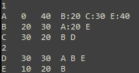
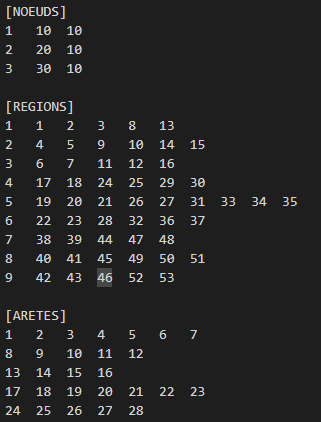
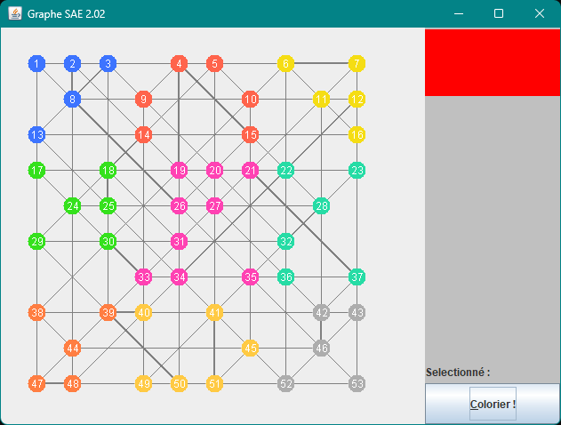

Situation
Une SAE relié à d'autre SAE, celle-ci consisté à la réalisation d'un jeu basé sur les principes de graphes.
Durant cette SAE, nous étions en groupe de 5. Je n'ai donc pas était seule sur cette SAE, mais cela ne m'a pas empécher
de travailler sur plusieurs partie du travail
Durant cette SAE, j'ai travaillé un peu partout : Metier, IHM et même Controleur (même si ce n'est pas la partie la plus intéressante).
Dans cette SAE, on devait comprendre comment detecté certaine choses,comme par exemple le fait de faire un cycle, de croiser des lignes déja
coloré, des calculs de points, etc...
Ce genre de connaissance venait directement des TP précédemment fait en Graphe
Lecture des données
Les données de la map était enregsitré dans un data qu'il fallait tout d'abord rédiger et donc structurer.
Ensuite, les professeurs nous on donner leur propre data. On avait le choix d'utiliser le notre ou le leur, mais pour
tester différente de structure nous avons décider d'utiliser le leur.


Dans cette SAE, nous aviosn commencé par utiliser les classes fournis par le professeur de graphe pour la
visualisation du Graphe. Plus tard, nous avons décidé de crée notre propre ihm.
Sauvegarde des données
Les sommet, arrête était enregistré dans différents type de classe dans le package metier.

Comme dit précédamment, nous avons du crée notre propre ihm afin d'afficher plus facilement la mappe, les régions mais aussi
plus facilement detecter les points selectionné pour colorier les arêtes.

Metier et fonctionnalités
Au final, nous avons finit la SAE par une justification de nos choix.
Pour voir le code en entier, n'hésitez pas à aller sur répértoire git
SAE 2.02 .